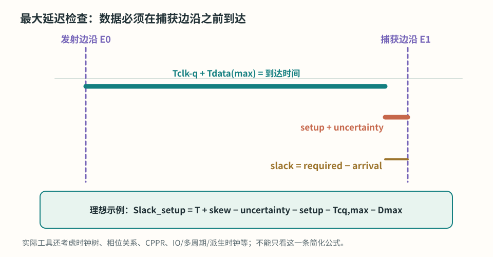
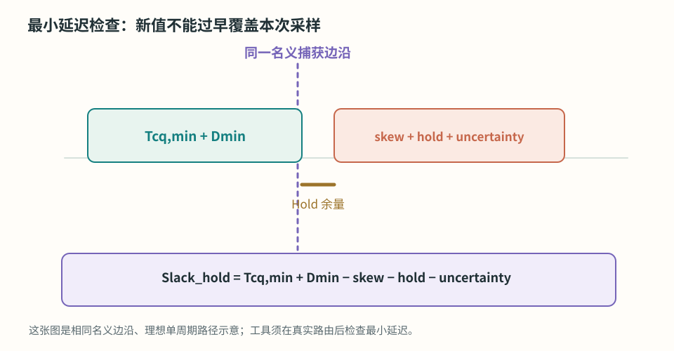
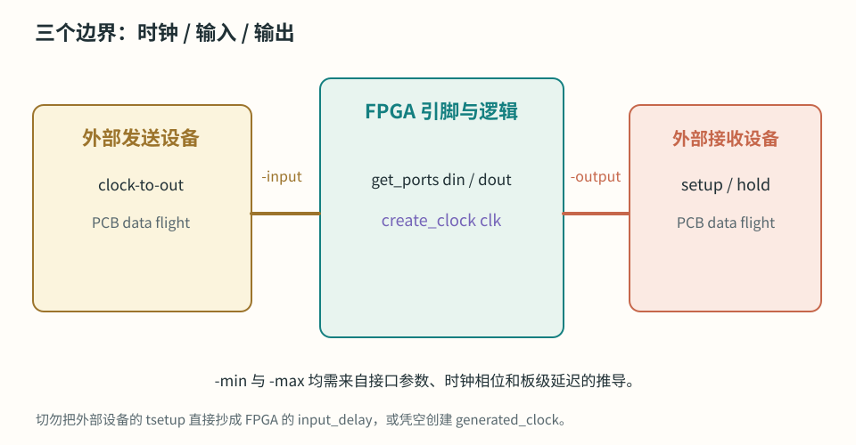

静态时序分析：把纳秒变成可审查的预算
一步步算清 Setup/Hold Slack、理解 I/O min/max、识别未约束路径和错误例外，并区分课堂算例与真实 STA。
01 / 时序约束并不是给工具一个目标频率就结束
RTL 仿真通过、同步器也加了，并不能告诉你目标 FPGA 的逻辑路径能否在 10 ns 内完成。静态时序分析（STA）需要 launch 与 capture 时钟、寄存器 timing arcs、最大最小组合路径及外部 I/O 约束，逐条计算数据到达和要求到达时刻。
Setup 检查最坏的晚到；Hold 检查最坏的过早到。它们并非“同一种违例，放慢时钟就都能修复”。同样，正 Slack 只有在有关时钟、输入输出和路径例外定义正确、且没有未约束关键路径时才有工程意义。

不要从信号命名推断时钟频率。Vivado 的 create_clock、create_generated_clock 和正确的 MMCM/IP 约束是 STA 能识别时钟关系的前提。
02 / 手算一条 setup 路径，识别 Slack 的方向
先使用理想化的相同名义时钟路径模型。定义 T 为周期，skew 是目的时钟沿减源时钟沿（为正表示捕获稍晚）、setup 是目的 FF 建立时间，uncertainty 表示此项检查预留的不确定度：
取纯教学参数：T=10.00 ns、skew=+0.10 ns、uncertainty_setup=0.15 ns、setup=0.25 ns、Tcq,max=0.35 ns、Dmax=7.80 ns。到达时间为 8.15 ns，要求到达时间为 9.70 ns，因此：
这只是简化的单路径算术，不能用 +1.55 ns 宣称真实板卡已经通过时序。实际引擎还考虑时钟树、clock pessimism removal、不同相位、I/O、corner、最大最小值表以及具体工具语义。
03 / 同名义边沿下的 hold 检查

取 Tcq,min=0.20 ns、Dmin=0.10 ns、skew=+0.10 ns、hold=0.08 ns、uncertainty_hold=0.03 ns，得到：
增加最小数据路径延迟有时可以帮助 hold，但可能损伤 setup；在 FPGA 中应优先让实现工具处理并复核其报告，切勿为“修复”hold 直接插入未经分析的 RTL 延迟。实际工具的 hold 计算有具体时钟关系和不确定度符号处理；上述公式仅供理解方向。
04 / 输入输出约束来自外部设备与板级传播

set_input_delay -max / -min 通常描述 FPGA 输入引脚处数据相对参考时钟的最晚/最早到达，需结合发送器 clock-to-out 和 PCB 走线；set_output_delay 对应外部接收设备的 setup/hold 加走线与时钟偏移。输出的 -min 允许为负值，这是时序符号约定的结果，不表示真实走线具有负传播时间。
# 全部数值仅为接口时序说明；不是可直接下载的板卡约束
create_clock -name sys_clk -period 10.000 [get_ports clk]
set_input_delay -clock sys_clk -max 2.1 [get_ports din]
set_input_delay -clock sys_clk -min 0.3 [get_ports din]
set_output_delay -clock sys_clk -max 1.7 [get_ports dout]
set_output_delay -clock sys_clk -min -0.4 [get_ports dout]本仓库提供 examples/timing/interface_example.xdc 作为独立研读案例。每个 min/max 值都需从目标外部芯片手册、板卡时钟树和 PCB 走线重新计算；不能把示例数字套到 Basys3 或其他设备。对于输入异步按钮等 CDC，不能编造它与主时钟有确定相位关系。
05 / WNS/TNS 与未约束路径：先问报告覆盖了什么
STA 报告至少要区分 setup、hold、时钟脉宽和未约束路径。WNS 表示最坏路径的 Slack，TNS 汇总负 Slack；即使 WNS≥0，也必须查明是否还有 unconstrained endpoints、忽略的时钟、被例外排除的关键数据和未正确约束的 I/O。
| 检查 | 主要发现 | 行动 |
|---|---|---|
| report_clock_interaction | 时钟关系与互相分析 | 检查所有创建与派生时钟 |
| report_timing_summary | Setup/Hold、WNS/TNS 等 | 检查路由后最长/最短路径 |
| check_timing | 缺少时钟、输入输出约束等 | 解决意外的 unconstrained |
| report_cdc | 跨域结构分类与风险 | 单独审查同步器与例外 |
不要用 blanket set_false_path、随意 set_multicycle_path 来让报告“变绿”。特别是 Gray FIFO 的 set_max_delay -datapath_only 或 set_bus_skew 可能被更高级的 clock-group 例外覆盖，必须核对生效约束与 report_methodology。
06 / 用脚本校验算术，但不要代替真实 STA
python3 scripts/sta_budget.py
python3 -m unittest discover -s tests -p 'test_sta_budget.py' -v自带的纯 Python 演示会打印本章理想数值：setup +1.55 ns，hold +0.09 ns。它的作用是让读者检查公式与符号方向，不调用 Vivado，也不会使用器件时序库和真实布线。真实设计必须运行布局布线后的时序报告。
如果晶振标称 100 MHz、精度 ±50 ppm，能直接断言必须将约束改成 90 MHz 吗？
不能。±50 ppm 的相对频率容差只有万分之零点五，不是 10%。目标约束应依据真实最小周期、抖动、温度/电压时序模型和设计余量推导。降低目标频率只会放松报告要求，并不会让实际板上晶振自动变慢。